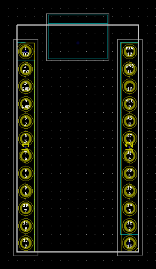

This project template is the basis of an expansion board for the Arduino Pro Micro.
This base project includes a PCB edge defined as the same size as the Arduino Pro Micro PCB with the connectors placed correctly to align the two boards.
The board outline looks like the following:

(c)2017 Heitor de Bittencourt